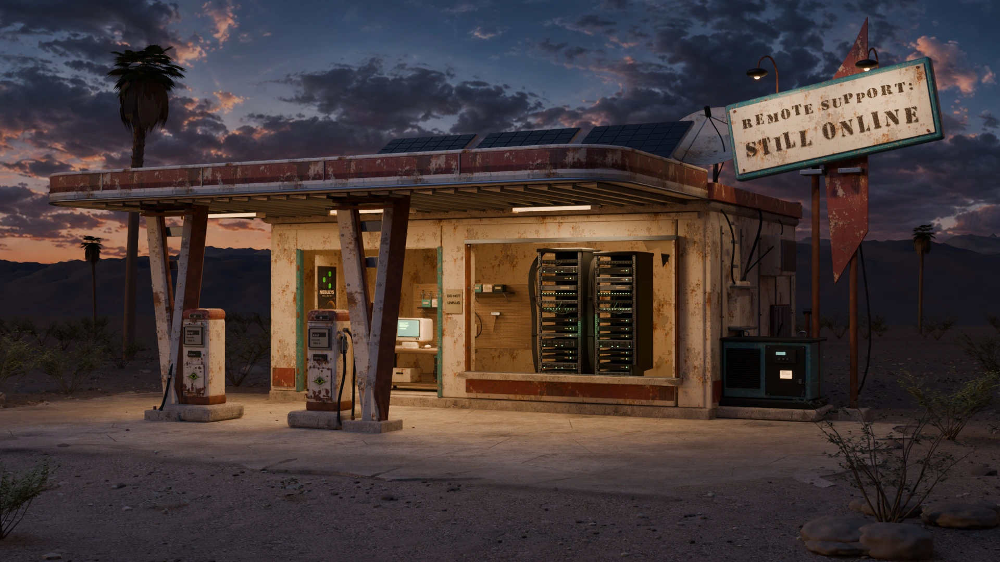

Still Online is an interactive Blender diorama by xD00g and Nebulys. Explore a Mojave service station with working server racks, a CRT terminal, a restartable generator and an imagined Milky Way. Sound is optional and motion can be turned off.

© 2026|Nebulys|xD00g
LOCAL CONSOLE / FICTIONAL OUTPOST
STILL ONLINE / roadside maintenance consoleNo tickets. No traffic. Plenty of dust.Type help to get your bearings.
The still scene is available. Enable JavaScript to explore the station and desert sky.